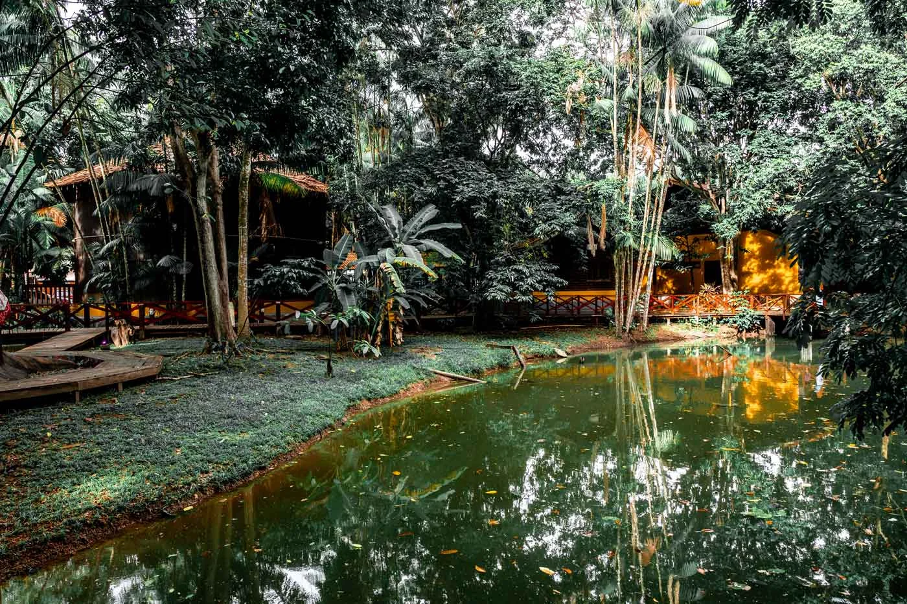

Macapá
Macapá, a capital do Amapá, é uma cidade estratégica localizada na região Norte do Brasil, com uma posição geográfica única, já que se encontra na linha do Equador, o que confere à cidade um caráter simbólico e atraente. Devido a essa localização, Macapá é um dos poucos lugares do mundo onde é possível estar nos dois hemisférios, o Norte e o Sul, ao mesmo tempo, o que atrai muitos turistas interessados nessa peculiaridade geográfica. Além disso, a cidade é uma porta de entrada para as riquezas naturais da região amazônica e para o Parque Nacional de Tumuc-Humac, que é uma das maiores áreas de floresta preservada do mundo.
A cidade também tem uma rica herança cultural, com influências indígenas, africanas e portuguesas, o que se reflete em sua gastronomia, arte e música. Macapá é ainda um destino ideal para quem busca ecoturismo, com várias opções para explorar a flora e fauna amazônicas, além de oferecer uma atmosfera tranquila e acolhedora, com uma excelente infraestrutura de turismo e cultura.
Principais pontos turísticos
- Fortaleza de São José de Macapá
- Marco Zero
- Ilha de Santana
- Mercado Central de Macapá
- Praia de Fazendinha
- Parque Nacional de Tumuc-Humac
A Fortaleza de São José de Macapá é um dos principais pontos turísticos da cidade. Construída no século XVIII, a fortaleza tem um papel importante na história da cidade, pois foi um dos pontos de defesa contra invasões estrangeiras. Com uma arquitetura impressionante, a fortaleza oferece uma vista panorâmica do rio Amazonas e da cidade.
Hoje, a fortaleza é um local de visitação, com exposições e atividades culturais, e também é um ótimo lugar para conhecer a história do Amapá e a sua importância estratégica na época colonial.
O Marco Zero de Macapá é um ponto simbólico e turístico da cidade, onde passa a linha do Equador, a linha imaginária que divide os hemisférios norte e sul. É um dos poucos locais do mundo onde os visitantes podem estar simultaneamente nos dois hemisférios. O local é bem marcado com um monumento, e é uma das atrações turísticas mais procuradas por quem visita a cidade, além de ser um excelente ponto para fotos e selfies.
A Ilha de Santana, localizada a cerca de 16 km de Macapá, é um local ideal para quem deseja escapar da agitação da cidade e aproveitar o ambiente natural. Com belas praias fluviais, a ilha é famosa por suas águas calmas e pela possibilidade de realizar atividades como passeios de barco, pesca e banho nas águas do Rio Amazonas.
É um destino perfeito para quem deseja vivenciar o ecoturismo e a tranquilidade da região amazônica.

O Mercado Central de Macapá é um dos centros comerciais mais antigos e tradicionais da cidade. Aqui, os turistas podem encontrar uma variedade de produtos típicos da região, como peixes, frutas exóticas, artesanatos e outros produtos da cultura local. O mercado é um excelente lugar para vivenciar o cotidiano dos habitantes de Macapá e experimentar a gastronomia local, além de poder comprar lembranças típicas da cidade e do estado.
A Praia de Fazendinha é uma das praias fluviais mais conhecidas de Macapá, localizada às margens do Rio Amazonas. A praia é muito procurada por turistas e moradores durante os finais de semana e feriados, sendo ideal para banhos de rio e relaxamento à beira d'água. A região conta com diversas opções de bares e restaurantes, onde é possível degustar pratos típicos e frutos do mar frescos, enquanto se aprecia a vista para o rio.
O Parque Nacional de Tumuc-Humac (ou Tumucumaque) é uma das maiores áreas de floresta preservada do mundo, com uma biodiversidade incrível e uma vasta gama de fauna e flora amazônicas. Embora o parque não seja de fácil acesso devido à sua localização remota, ele é uma excelente opção para os turistas que buscam experiências de ecoturismo e aventura, como trilhas na selva, observação de vida selvagem e acampamentos.
Principais pontos gastronômicos
- 313 Restaurante
- Localização: Centro de Macapá.
- Restaurante Estaleiro
- Localização: Trem.
- Restaurante Amazon Beach
- Localização: Vila Amazonas.
- Downtown Steakhouse
- Localização: Centro de Macapá.
O 313 Restaurante é considerado a nova aposta em gastronomia do Amapá, com uma experiência especial e que se diferencia de tudo o que há na região. Todos os pratos do restaurante são feitos com ingredientes cuidadosamente selecionados e frescos, bem como há um ambiente que conta com decoração contemporânea e clima familiar. Com um atendimento diferenciado e funcionários atenciosos, o restaurante oferece em seu cardápio, pratos típicos da região e alguns tradicionais, ou seja, o local atende todos os gostos e exigências. Além disso tudo, você pode contar uma bela carta de drinks autorais e as bebidas mais tradicionais do Brasil e do mundo afora.
É uma ótima opção para se conferir as delícias que o 313 Restaurante tem a oferecer, principalmente quando se fala em petiscos e entradas.
Se você procura um restaurante com comidas típicas da região sudeste e quer experimentar um tempero diferenciado, o Estaleiro é uma boa opção. Com pratos à base de frutos do mar e funcionamento a la carte, é um espaço acolhedor e ideal para a família, com decoração temática de pesca, marinha e navegação. Considerado um restaurante com cardápio variado e delicioso pelos clientes, algumas das entradas mais conhecidas da casa são o camarão à milanesa, os bolinhos de bacalhau e as saladas com camarão, por exemplo. De pratos quentes, há risotos com temperos da casa e espaguete, além do peixe ao molho branco com camarão rosa, arroz à grega, batata frita e farofa. Como sobremesa, o pedido mais famoso é o sorvete de cupuaçu, típico da região norte.
O ambiente é ideal para encontrar uns amigos ou mesmo para um jantar a dois.
O Amazon Beach é aquele restaurante que oferece uma experiência completa, onde se pode passar o dia. Com um ambiente lounge e um bar com bebidas geladas e drinks autorais da casa. Além disso, conta com programação infantil para as crianças aproveitarem a natureza enquanto os adultos se deliciam com o cardápio local. O restaurante conta com diversos pratos quentes, petiscos e entradas. Os petiscos mais conhecidos são o camarão no bafo, o escondidinho de carne seca e a macaxeira cremosa. Já as entradas deliciosas mais pedidas são o camarão pitu preparado no bafo e casquinha de caranguejo.
O Downtown Steakhouse é perfeito para quem curte um clima americano e comida diferenciada. Um dos pratos que mais chama a atenção no cardápio é o Boss Ribs, uma costelinha de porco que desmancha na boca com molho especial do chefe. Além disso, há o trio de linguiças artesanais apimentadas que são uma delícia, que vem acompanhadas por queijo coalho, pernil, pãozinho, vinagrete e maionese de alho.
Ah, e não pode faltar boa música e aquela cerveja gelada!
Principais pontos culturais
- Teatro das Bacabeiras
- Localização: Centro de Macapá.
- Museu Sacaca 
- Localização: Trem.
- Centro Cultural Franco Amapaense
- Localização: Centro de Macapá .
- Museu Histórico de Macapá
- Localização: Centro de Macapá.
O Teatro das Bacabeiras é um dos maiores e mais importantes espaços culturais de Macapá, promovendo uma programação diversificada de espetáculos de teatro, dança, música e eventos culturais. Com uma arquitetura moderna e uma boa infraestrutura, o teatro é palco de apresentações locais e também de artistas de outras partes do Brasil e do mundo. É uma excelente opção para quem deseja vivenciar a cena cultural de Macapá.
O Museu Sacaca é um dos principais pontos culturais da cidade, dedicado à preservação e divulgação das tradições culturais e históricas do Amapá. O museu apresenta um acervo de objetos, roupas, utensílios e artefatos que fazem parte da cultura local e dos povos indígenas da região. Ele também realiza atividades educativas, workshops e exposições temáticas.
O Centro Cultural Franco Amapaense é um local que oferece uma programação cultural ampla, incluindo concertos musicais, exposições de arte e apresentações de teatro. O centro visa promover a integração da cultura francesa com a local e a diversidade cultural do Amapá. Além disso, o local oferece cursos e oficinas de arte para a comunidade.
O Museu Histórico de Macapá é um excelente lugar para entender a história e o crescimento da cidade, com exposições sobre o desenvolvimento urbano, econômico e cultural de Macapá. O museu apresenta um acervo de fotografias, objetos históricos e relatos que ajudam a contextualizar a cidade dentro da história do Amapá e do Brasil. É uma ótima opção para quem quer aprender mais sobre a trajetória da cidade e do estado.